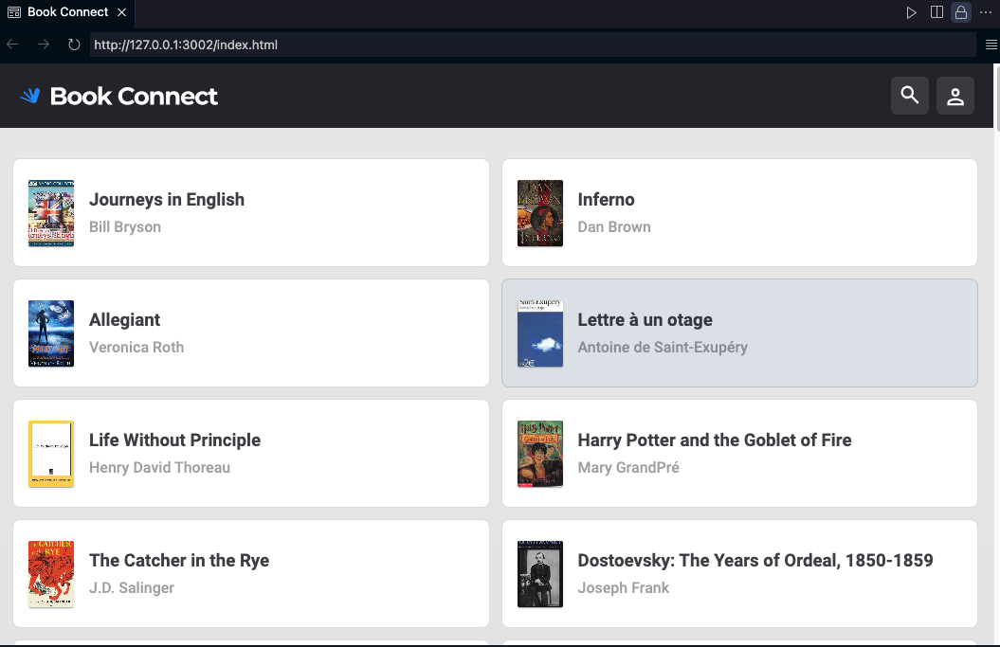

Hello! I’m Pearl, I am an ISTQB-certified Software Tester with 8 months of software development experience. I have strong analytical and problem-solving skills, a keen eye for detail, and a passion for ensuring software quality. I have completed a Jira course on manual testing and am currently learning how to conduct test automation using Selenium WebDriver to expand my skill set. My expertise includes writing and executing test cases, identifying defects, and collaborating with developers to enhance product reliability. I am eager to apply my skills in a software testing role and contribute to delivering high-quality digital solutions.
ISTQB Certified Tester Foundation Level
score: 87.5% (2 Feburary 2025)
Jira Manual Testing Certificate
(7 Feburary 2025)
Software Development Program
(2024)
Bachelor of Arts: Commmunication
(2017)
Kanban Task Management App
Overview: This app organizes tasks visually on a board, allowing users to create, move, and prioritize tasks across different columns (like "To Do," "In Progress," and "Done"). It’s designed to streamline project management, providing users with a clear overview of task progress.
Skills Gained: I developed skills in JavaScript for dynamic functionality, handling event-driven programming to manage task updates, and DOM manipulation to support a responsive, interactive UI. I also practiced using CSS for layout design and state management to handle task data effectively across different board columns. Throughout the development process, I adopted a Test-Driven Development (TDD) approach, writing tests before code implementation to ensure robust and reliable functionality, catching bugs early, and improving overall code quality.

Virtual Pet Adoption Website
Overview: This website simulates the experience of adopting a pet, allowing users to explore and adopt various animals with details such as pet names, types, and needs. It provides a friendly, engaging interface for potential adopters.
Skills Gained: I used an Exploratory Testing approach to validate the functionality of the validateSyntax function. I manually tested the input by entering various pet adoption details into the input field, ensuring that the function correctly identified valid and invalid syntax based on the pattern specified ("pet_" followed by letters and numbers). I debugged and refined the code as needed, using the browser console to inspect and resolve any issues.

Book Connect Application
Overview: The Book Connect app offers a comprehensive list of books, allowing users to preview book details (such as author, genre, and image) and filter based on their preferences. It helps users discover and explore a wide variety of books.
Skills Gained: For the "Book Connect" project, I utilized a Unit Testing approach to test individual functions and objects after refactoring. I wrote tests to ensure that the core features (book search, filtering, and rendering) continued to work as expected after applying abstraction and refactoring the code. Additionally, I conducted Functional Testing by manually verifying that the application’s UI and interaction logic remained intact. This helped ensure that the refactor improved code maintainability without breaking existing functionality.
Cache Bank Landing Page
Overview: The landing page serves as the initial point of contact for the Cache Bank, highlighting services, benefits, and features in an attractive and professional layout to encourage user engagement.
Skills Gained: Creating this landing page helped me refine my layout and styling skills using CSS, specifically Tailwind CSS, including techniques to achieve a polished, responsive design. Additionally, I used basic JavaScript animations to enhance the visual appeal and user experience of the site.